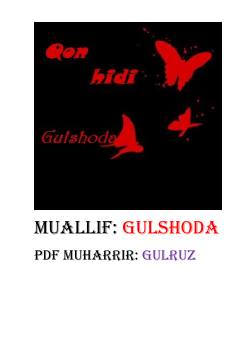

QHVampir yigitning sevgi, azob va o'z nafsi bilan bo'lgan fojiali kurashi.
Stiv ismli vampirning o'z nafsi va qonga bo'lgan chanqoqligi bilan kurashi haqida hikoya qilinadi. U Eliza ismli qizni sevib qoladi, biroq o'zining vahshiy tabiati tufayli undan uzoq yurishga majbur bo'ladi. Voqealar rivoji fojiali yakun topib, qahramon o'z qilmishlarining og'ir oqibatlarini anglab yetadi.